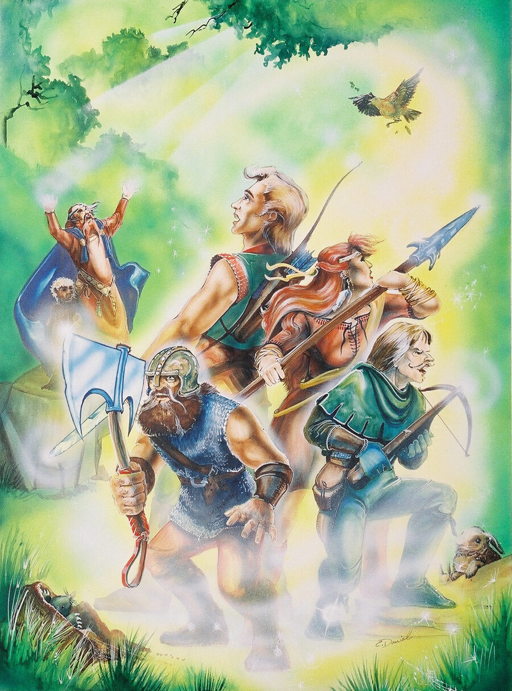

Amar
A realistic role-playing game you learn in an evening, played with one six-sided die.
Skill + O6 ≥ DR
Every roll works the same way. Add your skill to an open-ended die roll (O6) and meet or beat the Difficulty Rating (DR).
Roll a 6 and you roll again, adding 1 for every 4 or higher. Roll a 1 and you roll again, taking away 1 for every 3 or lower.
“A fucking amazing game system” (GarThaleon)
New to role-playing
A few people sit around a table, each with a character on a sheet of paper. The Game Master tells them what their characters see and meet. The players say what their characters do. When something could fail, a die decides.
- Amar LiteThe whole game on one page, for beginners and young players.
- The first Amar Lite adventureA goblin hunt for a first evening of play.
- What are role-playing games?A 20-minute podcast.
- The Amar Lite podcastHow the one-page game works.
The rules
- IntroductionRole-playing, the dice and what you need.
- Amar rules 101The rules told as a story, step by step.
- The CharacterMaking a character, skills and experience.
- CombatMelee, missiles, armour and wounds.
- EquipmentGoods, gear, prices and wages.
- Movement and WeatherTravel across terrain and in all weathers.
Magick
The world of Amar
- MythologyThe creation, the gods and the calendar.
- The GodsEvery god, with symbol, domain and holy day.
- The Kingdom of AmarThe kingdom, its districts and its cities.
- PlacesTowns, castles and villages across Amar.
- The Rise to InfamyThe story of how Amar came to be.
People and creatures
- NPCsThe personalities of Amar, with full character sheets.
- EncountersAnimals, peoples and monsters, with 3-tier stats.
For the Game Master
- Advice to the GMTips for new Game Masters.
- GM's ScreenPanels to keep the game flowing.
- The First AdventureA first adventure to get a new GM started.
- Compacting informationAdventure notes with no bloat.
- Conversion from other RPGsBring characters and monsters from RuneQuest, D&D, Pathfinder.
- Amar ToolsOnline generators for encounters, NPCs, towns and weather.
Add-ons
- Universal AmarPirates, modern days and science fiction, with guns and lasers.
- Experimental SystemsRules being tried out.
- Evolutionary MagickA magick system where spells grow along paths.
The book
The rules and the Kingdom of Amar in one book of 305 pages, with the illustrations, maps, gods, creatures and personalities.
- The Amar RPG bookPDF for reading on a screen, 17 MB.
- Print editionPDF, A4 with bleed, 76 MB.